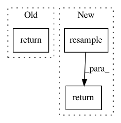

93298920990d3c51d6257ec85fa7691cc0fabaaf,Utils.py,,resample,#Any#Any#Any#,7
Before Change
def resample(audio, orig_sr, new_sr):
if orig_sr != new_sr:
new_length = int(float(audio.shape[0]) * float(new_sr) / float(orig_sr))
return resample_length(audio, new_length)
else:
return audio
def resample_length(audio, new_length):
After Change
return tf.maximum(tf.minimum(x, 1.0), -1.0)
def resample(audio, orig_sr, new_sr):
return librosa.resample(audio.T, orig_sr, new_sr).T
def load(path, sr=22050, mono=True, offset=0.0, duration=None, dtype=np.float32):
// ALWAYS output (n_frames, n_channels) audio
y, orig_sr = librosa.load(path, sr, mono, offset, duration, dtype)
In pattern: SUPERPATTERN
Frequency: 4
Non-data size: 3
Instances
Project Name: f90/Wave-U-Net
Commit Name: 93298920990d3c51d6257ec85fa7691cc0fabaaf
Time: 2019-02-03
Author: daniel@dstoller.net
File Name: Utils.py
Class Name:
Method Name: resample
Project Name: QUANTAXIS/QUANTAXIS
Commit Name: fefc1fc7fefd84f31018a4b02e08df6e4ae5fa71
Time: 2018-08-02
Author: yutiansut@qq.com
File Name: QUANTAXIS/QAData/data_resample.py
Class Name:
Method Name: QA_data_day_resample
Project Name: nilmtk/nilmtk
Commit Name: 2c16357cf3b2a5b1265caf7d89703ef253e39df3
Time: 2014-01-07
Author: jack-list@xlk.org.uk
File Name: nilmtk/stats/electricity/single.py
Class Name:
Method Name: missing_samples_per_period
Project Name: r9y9/wavenet_vocoder
Commit Name: 985496146dd1ebdc3a43ac921de627c6b61b5200
Time: 2019-08-25
Author: zryuichi@gmail.com
File Name: audio.py
Class Name:
Method Name: load_wav